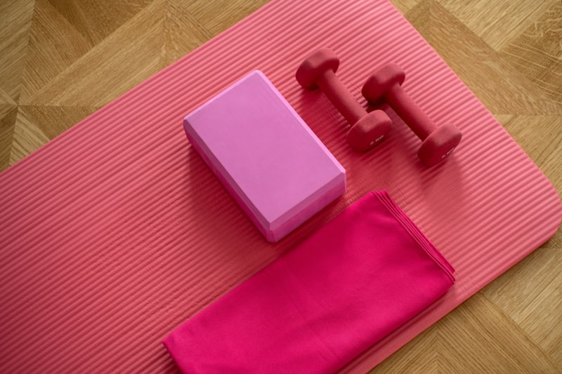
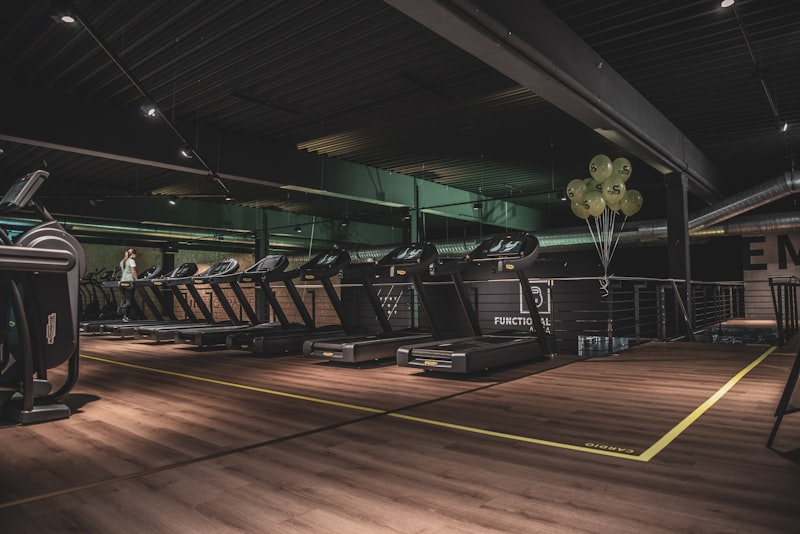
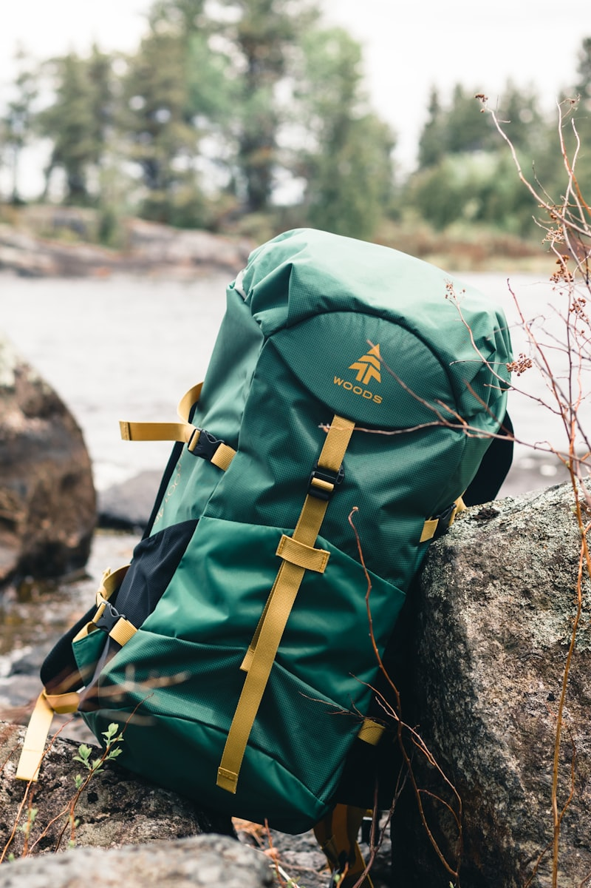

01 / FOOTWEAR
Nike GP Challenge 1 "Naomi Osaka" US Open
$170
大坂专属美网配色，货号 HQ2553-600。前掌 Air Zoom 缓震，硬地专用。红底加向日葵纹路，金属 Swoosh 包住鞋跟，复古网球鞋轮廓。
同系列还有澳网 2026 的蓝白向日葵配色，适合全面场训练。入门可看 Nike Court Lite 4。
脏辫致敬艾弗森、白纱柔化痞帅、订制礼服缝进职业生涯新闻剪报——9 月 1 日阿瑟·阿什球场夜场，两届赛会冠军把美网首轮打成了一场行走的时装秀。
赛事同款是时效稿：赛后一周内发布，热度期过后转为常青指南的导流页。
本文涉及商品均为品牌公开销售款，价格随地区与时间波动。
大坂直美说，这届美网入场造型的核心是「订制礼服 + 职业生涯新闻剪报」——把媒体多年关于她的报道、比分、争议、回归，全部缝进礼服面料里。
风格关键词：Streetwear × Couture × Sportswear 三合一。黑 + 白 + 街头 Braid，是她给美网 2026 定下的视觉调性。
9 月 1 日美网夜场压轴，这套造型一出场就刷屏了：现场观众起立鼓掌，「Queen is back」喊声不断；时尚媒体把它列进「2026 大满贯最佳入场造型」前列；同款脏辫加白纱造型在社交平台 24 小时内被大量模仿。当晚她直落两盘晋级。
关键不是「好看」，是故事性——她在用服装预告自己的回归。
从她战袍和 Nike US Open Kit 里挑出来的可买款，按品类分组，直接抄作业。
大坂专属美网配色，货号 HQ2553-600。前掌 Air Zoom 缓震，硬地专用。红底加向日葵纹路，金属 Swoosh 包住鞋跟，复古网球鞋轮廓。
同系列还有澳网 2026 的蓝白向日葵配色，适合全面场训练。入门可看 Nike Court Lite 4。

战袍的「功能性内核」：全网眼结构 + 高领设计，长时间比赛不闷；Racerback 剪裁让挥拍零束缚。
这是量产款，不是她入场那件订制礼服——入场礼服是非卖品，别被代购骗了。

致敬艾弗森的灵魂配件。一块单品就能改变整套造型的质感——从「运动员」变成「街头战神」。
厚款发带更接近她那种体积感，细款更日常。淘宝和 Amazon 都有大量同款，注意选弹力够、不勒头的。

她每次出场都拎的球包。22L / 32L 两款，能放两支拍加全套装备。街头风配色，球场通勤两用。

她赛场「精致感」的来源：水钻点缀发型，金属手链在灯光下反光。整套造型的出片率靠这些细节撑。
打球时手链建议选细款或硅胶款，避免影响握拍。
| 幕后必备 | 为什么需要 |
|---|---|
| 防晒喷雾 SPF50+ | 美网 9 月日晒强，户外训练必备 |
| 速干毛巾 | 球场 setup 的基础件，换边擦手擦拍 |
| 防磨膏 | 防脚部水泡，长时间比赛与训练救命 |
| 运动冰喷雾 | 赛后肌肉恢复，夏天尤其有用 |
预算有限就按这个顺序：球鞋 → 连衣裙 → 发带套装。前两件是造型骨架，第三件是那 10% 的惊喜。
美网还在继续，她的下一件战袍也在路上。普通球迷能做的，是把这套「街头战神」美学穿到自己的球场——不一定要花大钱，但一定要有故事。